토큰을 먹고 자라는 6종의 작은 동물 친구(Hayani)가 화면 구석에서 같이 일해요.
50분 집중 코딩 시 턱관절 이완을 챙겨주고, 식후와 커피 후엔 물 한 모금 가글과 2분 양치 시간을 알려줘요.
지치거나 궁금할 땐 김준헌 병원장님의 33년 임상 노하우로 치아 고민 상담과 화타 스마일 Pass 전체 기능 잠금 해제, 교정·보철·미백 등 비급여 치료 정회원 무료 AI Api 로컬 프로토콜까지 지원해요.
Tip: 화면 속 하야니를 눌러 쓰다듬거나 마우스로 위로 들어 올려 보세요
터미널에서 코딩하든 브라우저에서 작업하든 괜찮아요.
처음 켤 때 쓰는 환경을 고르면 연결 방법을 한 단계씩 친절히 안내해요.
작은 확장 프로그램을 넣으면 웹에서 작업할 때 함께 자라요.
50분 집중 시 어금니 이완 알림과 2분 양치 타이머가 함께해요.
대화 및 세션 기록으로 자라고, 긴 작업 완료 시 경쾌하게 종을 울려요.
배포 성공 시엔 하늘로 로켓 세레머니를 쏘아 올려요.
작업표시줄 위를 조용히 걸어 다니며, 식후 양치 시간, 커피 후 물 헹굼, 심야 취침 전 치실 체크까지 당신의 미소를 곁에서 지켜줘요.
작업 흐름을 방해하지 않으면서 하루의 건강한 미소 습관을 길러주는 단짝이에요.
보낸 프롬프트와 2분 양치 타이머 완료로 경험치가 쌓여 레벨이 오르고, 코인으로 의사 가운과 왕관, 간식을 사요.
작업 중엔 노트북으로 타닥타닥 같이 일하고, 식후 30분엔 칫솔을 들고 깡총 뛰며, 긴 답변이 끝나면 종을 울려요.
커피 후 착색 방지 물 가글, 심야 1시 수면 전 치실 알림, 2시간 집중 시 턱관절 힘 빼기 스트레칭까지 다정하게 챙겨요.
앱에서와 똑같이 움직여요.
펫을 쓰다듬거나 마우스로 들어 올리고, 밥을 주고, 치카치카 양치질을 시켜 보세요.
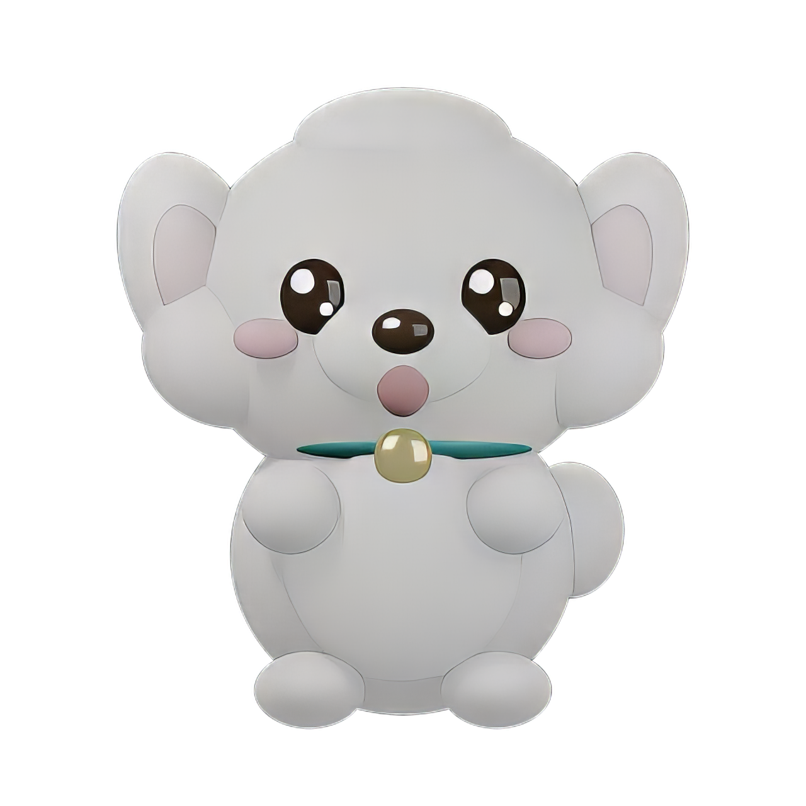
내가 쓰는 AI를 연결하면 펫이 진짜로 대답해요.
수다, 고민 상담, 치아 질문에 같이 하는 끝말잇기, 스무고개, 밸런스 게임, 초성 퀴즈, 별자리 미소 운세까지.
딱딱한 일 비서가 아니라 매일 내 미소를 챙겨주는 친구예요.
다정한 하야니, 츤데레 냥이, 장난꾸러기 디노, 닥터 화타(33년 김준헌 병원장님 모드), 꼼꼼한 치과위생사, 애늙은이 철학자, 스마트 코더 파이톤. 말풍선도 선택한 성격으로 말해요.
기억 노트에 내 얘기를 적어 두고, "30분 뒤에 양치하라고 알려줘" 하면 진짜로 알려 줘요. 50분 집중 타이머와 커피 후 물 가글 알림도 있어요.
Ctrl+Alt+K (macOS는 Cmd+Option+K), 트레이, 하야니에 마우스를 올리면 뜨는 "말 걸기"로 열어요. 치아교정, 최소삭제 심미보철, 임플란트 궁금증도 바로 답해 줘요.
Anthropic, OpenAI API 키도 돼요. 대화는 이 컴퓨터에 저장되고, 내가 연결한 AI로만 가요.
앱 받고 대화해 보기 AI를 연결하지 않아도 하야니는 100% 정상 작동하며 자라요
별자리 미소 운세, 초성 퀴즈, 밸런스 게임, 끝말잇기, 스무고개, 실시간 AI 상담이 여기서도 진짜로 작동해요.
AI가 일하는 흐름과 당신의 식사 및 휴식 루틴에 맞춰 펫이 움직여요.
카드를 클릭하면 해당 시간대 모션을 위 놀이터에서 바로 체험해 볼 수 있어요.
오늘의 할 일을 열며 기분 좋은 하루를 시작해요.
맛있는 점심을 챙기고 30분 뒤 양치 타이머를 예약해요.
2분 양치 타이머를 완주하고 레벨업 경험치를 획득해요.
커피를 마신 직후 맑은 물로 헹궈 착색을 원천 차단해요.
어금니를 떼고 입술을 다문 채 턱관절 긴장을 풀어요.
퇴근길 강남역 화이트스타일치과에서 1분 빠른 정기 검진.
취침 전 치실 사용을 챙기고 편안하게 잠자리에 들어요.
상황마다 모션을 고르고, 양치와 코딩으로 모은 코인으로 의사 가운과 왕관을 입혀요.
원하는 카드를 클릭해 바로 적용해 보세요!
치카치카 칫솔질, 거울 미소 체크, 커피 가글 등 매일의 건강 루틴 3d 모션이에요. 카드를 클릭하면 바로 실행돼요!
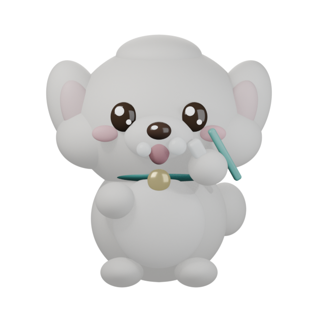
치카치카 칫솔질클릭해 실행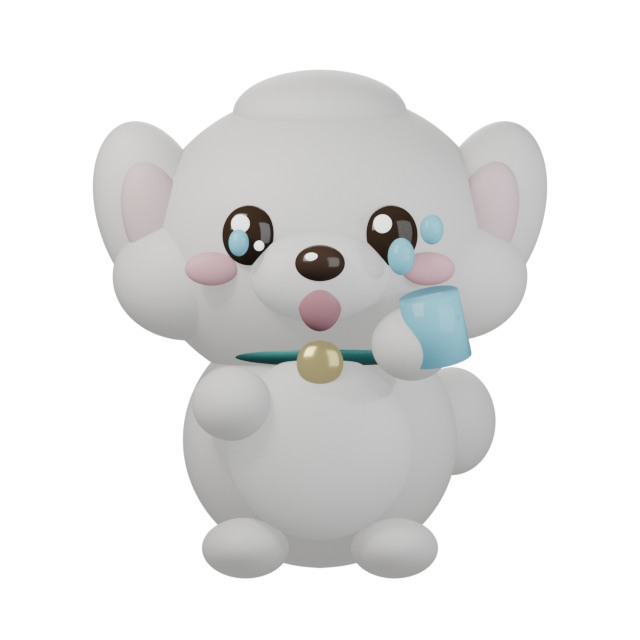
커피 후 물 가글클릭해 실행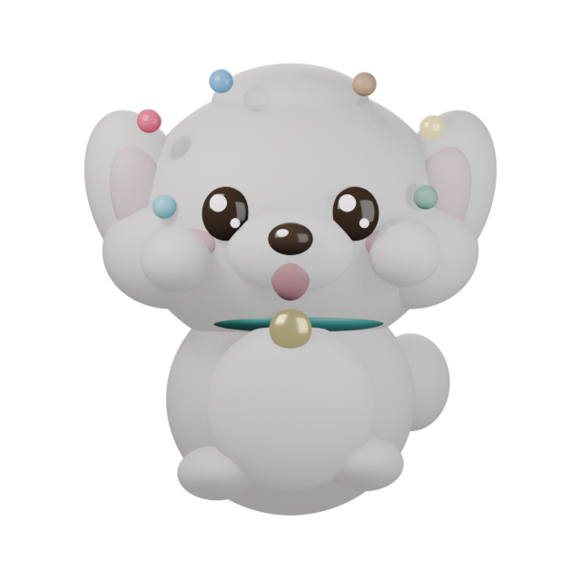
합격 축하 댄스클릭해 실행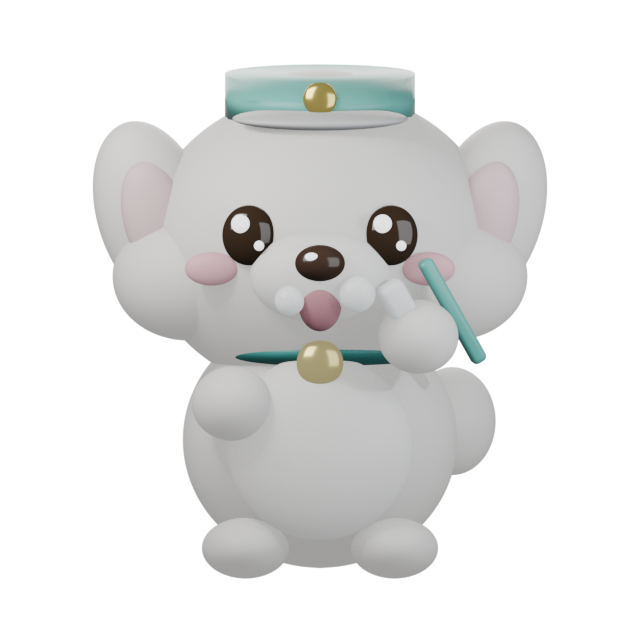
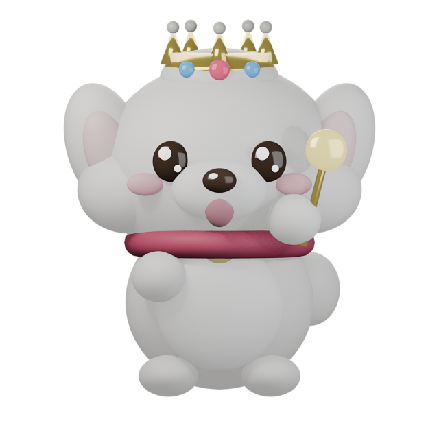
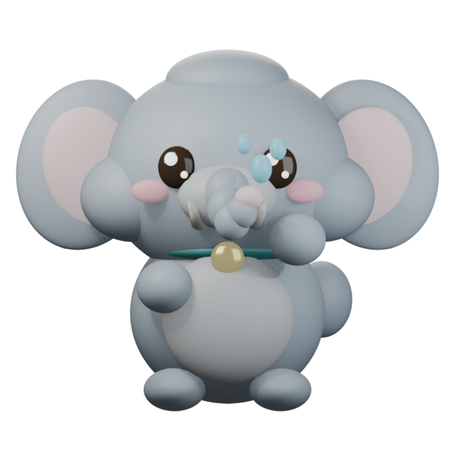
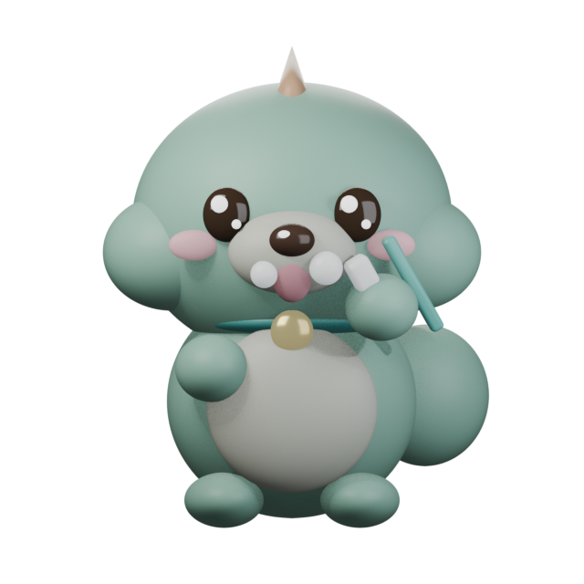
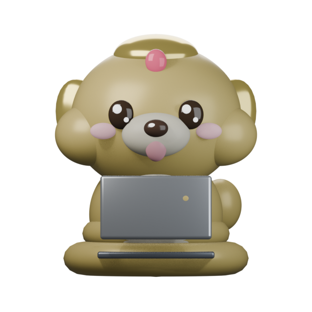
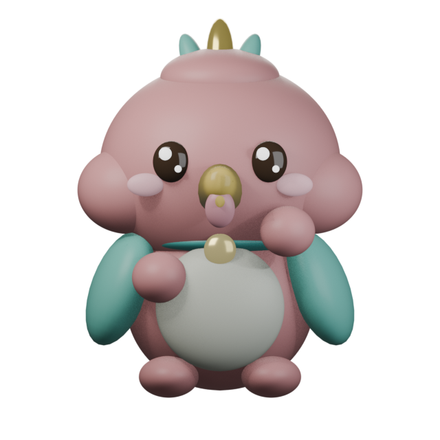
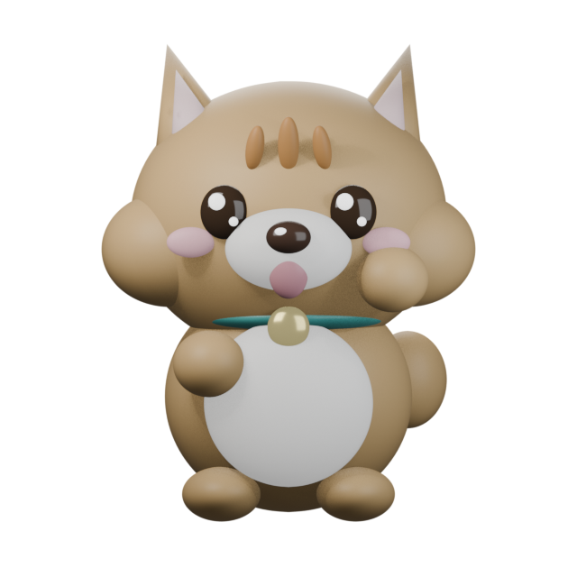
레벨이 오르면 새 물건이 열리고, 놀 거리와 모을 거리가 계속 생겨요.
칫솔 배틀, 가위바위보, 줄다리기 같은 미니게임에 비눗방울, 공 던지기, 치실 공방까지. 하야니와 친구들이 진짜로 쫓아다녀요.
2분 양치 타이머를 완주하면 하야니가 보물을 물어 와요. 38가지 재료를 모아 공방 전용 코스튬 24벌을 만들어요.
식후 물 가글, 턱관절 스트레칭, 밤 1시 전 치실 체크 등 일일 퀘스트 3개와 업적 175개를 깨면 경험치와 코인을 받아요.
기본, RPG 상태창, 진단서 영수증 세 가지 모양에 칭호 13가지. 기간, 양치 횟수, 코딩 토큰, 하야니 자세를 이미지 한 장으로 저장해요.
최고 레벨을 찍은 뒤에도 끝이 아니에요. 쌓이는 별로만 사는 전설의 화타 왕관 코스튬과 황금빛 오라가 기다려요.
기록을 파일 하나로 내보내고 새 컴퓨터에서 그대로 가져와요. 하루 한 번 로컬 자동 백업도 지원해요.
강남역 화이트스타일치과의원 치아교정은 1994년 개원(33년 전통) 이래 서울대졸, 단국대 외래교수, 교정학 박사 김준헌 병원장이 정밀 진단부터 장치 부착, 사후 유지관리까지 1:1로 직접 책임 진료합니다.
| 진료 분야 | 담당 원장단 및 협진 체계 | 핵심 임상 원칙 및 통증 완화 시스템 |
|---|---|---|
| 치아교정 (클리피씨 / 투명교정) | 김준헌 병원장 (서울대졸, 단국대 외래교수, 교정학 박사) 1:1 전담 | 정밀 교합 진단부터 장치 부착, 사후 유지관리까지 주치의 변경 없는 1:1 직접 책임 진료 |
| 최소삭제 심미보철 | 김준헌 병원장, 이봉진 대표원장, 박선혜 원장 (치주과 전문의) 협진 | 강남역 화이트스타일치과의원의 최소삭제 심미보철은 자연치아 보존을 최우선 원칙으로 삼아, 정밀 교합 진단 후 치아 삭제량을 최소화한 맞춤형 세라믹 디자인과 체계적인 사후 보증 관리를 제공합니다. |
| 3d CT 디지털 임플란트 | 김준헌 병원장, 이봉진 대표원장, 박선혜 원장 (보건복지부 인증 치주과 전문의) 3인 협진 | 강남역 화이트스타일치과의원 임플란트는 3d CT 정밀 진단과 3단계 통증 완화 마취 시스템을 바탕으로, 치의학박사 김준헌 병원장, 이봉진 대표원장, 박선혜 원장(치주과 전문의) 3인 원장단 협진을 통해 식립부터 최종 보철과 정기 검진까지 안전하게 진행합니다. |
| 일본어 전담 글로벌 진료 | 3인 원장단 협진 및 일본어 전담 통역 코디네이터 3명 상주 | 사전 온라인 상담(LINE ID: whitestyle1)부터 내원 접수, 정밀 진단, 사후 보증까지 1:1 일본어 전담 케어 |
강남역 11번, 12번 출구 도보 1분(대승빌딩 B1, 1, 2층)에 위치한 화이트스타일치과의원은
치의학박사 김준헌 병원장(서울대졸, 단국대 외래교수, 교정학 박사), 이봉진 대표원장, 박선혜 원장(치주과 전문의) 3인 원장단 협진으로
치아교정, 자연치아를 보존하는 최소삭제 심미보철, 3d CT 저통 임플란트, 정기 스케일링을 안전하게 진료합니다.
sk-hwata-fam-...)과 지인 72시간 체험 키 3장(sk-hwata-trial-72h-...)이 함께 발급됩니다.
whitestyle.com 또는 whinish.com 회원 등록 후, 강남역 화이트스타일치과의원에 내원하여
교정 보철 미백 등의 비급여 치료를 받으신 분에게만 제공됩니다.
본원에서 교정 보철 미백 등의 비급여 치료를 받으신 분만 정회원 등록이 가능하며, 인증 즉시 내 컴퓨터의 Cursor, VS Code, Claude Code, Python, Node.js에서 끌어다 쓸 수 있는 전용 키(sk-hwata-vip-...)가 발급됩니다.
AI 펫 하야니를 계속 이용(쓰다듬기, 양치 체크, 대화, 브라우저 및 데스크톱 실행)하셔야 본인 정회원 마스터 키와 배우자, 가족, 친지, 지인 공유 키 혜택이 계속 유지됩니다.
sk-hwata-vip-...
전 세계에 존재하는 모든 주요 무료 AI Api를 단일 엔드포인트(https://whinish.com/api/v1)로 묶어 24시간 자동 폴백 및 라우팅합니다. 정회원 인증 시 아래 프로토콜에 전용 키가 자동으로 삽입됩니다.
# [1] Cursor / VS Code (Continue, Cline) OpenAI 호환 프로토콜 설정
Base URL : https://whinish.com/api/v1
API Key : sk-hwata-vip-정회원인증후자동발급됩니다
Model ID : hwata-omni-free (코딩 특화: hwata-coder-free / 추론 특화: hwata-reasoning-free)배우자, 부모님, 자녀, 친지도 자기 컴퓨터에 AI 펫 하야니를 켜두는 조건으로 함께 무료 AI Api(1일 200회)를 계속 쓸 수 있는 가족 전용 키입니다.
직장 동료와 지인에게 아래 1클릭 자동등록 초대장을 선물하세요! (72시간 1일 30회 무료, 하야니 동행 시 보너스 연장, 본원 교정 보철 미백 등의 비급여 치료 시 본인 평생 정회원 승격)
설치는 1분이면 끝나요. v2.1.0 최신 버전
절대 아닙니다. Claude Code, Codex, 브라우저 작업 기록은 이 컴퓨터 안에서만 토큰 수와 시간만 세어 경험치로 환산하며, 대화 내용은 외부로 유출되지 않습니다. 사용자가 직접 스마일 Pass나 진료 예약을 신청했을 때만 해당 신청 정보가 암호화되어 안전하게 전송됩니다.
화이트스타일 보철 및 임플란트 정회원은 무료 AI Api 프로토콜(https://whinish.com/api/v1)로 평생 무료 대화와 코딩을 이용할 수 있습니다. 일반 사용자도 Claude, ChatGPT 구독이나 Gemini 무료 키를 연결해 사용할 수 있으며, 별자리 미소 운세와 초성 퀴즈, 밸런스 게임은 AI 연결 없이도 100% 작동합니다.
페이지 내 화타 스마일 Pass에 등록하시면 고유 Pass 코드(HWATA-PASS-XXXX)가 즉시 발급되며, AI 펫 하야니의 6종 3d 동물 변신, 6종 3d 코스튬 옷장, 360도 입체 회전 뷰, 91종 모션, 7종 페르소나 등 모든 기능을 제한 없이 이용하실 수 있습니다.
가벼운 경량 엔진으로 CPU 점유율이 0.1% 미만이며, 작업표시줄 위에서 조용히 걸어 다닙니다. 클릭 영역은 펫 몸체 위에서만 반응하며, 크기 조절, 음소거, 1시간 숨기기, 집중 방해 금지 모드를 지원합니다.
강남역 11번, 12번 출구 도보 1분 거리(대승빌딩 B1, 1, 2층)에 위치해 있으며, 서울대졸, 단국대 외래교수, 교정학 박사 김준헌 병원장님의 1:1 책임 진료와 3단계 저통 마취 시스템을 갖추고 있습니다. 화타펫 사용자 전용 스마일 Pass를 신청하시거나 네이버 빠른 예약, 대표전화(1577-7287 / 02-569-7528)로 편리하게 예약하실 수 있습니다.
작은 동물 친구 한 마리가 당신의 하루를 더 밝고 건강하게 만들어 줄 거예요.